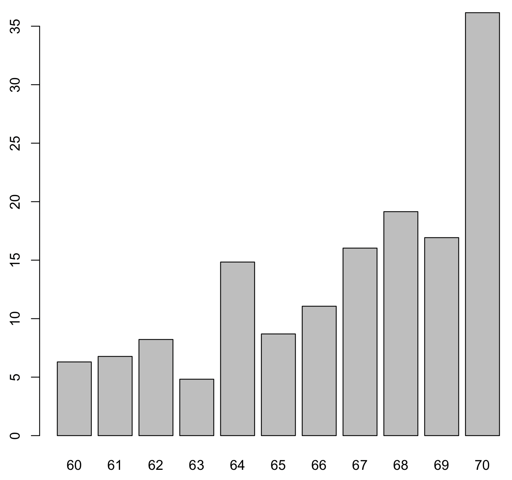

Significant speed increase in package QCA
The upcoming release version 3.23 of the package QCA will bring a significant speed increase for the minimization process, by a factor of about 10 times on my computer. This achievement has two sources:
- parallelizing the search process to find the prime implicants
- adding the option to use the Gurobi optimizer for solving the prime implicants chart
The parallelization process is made possible by using the OpenMP API, which is available on most modern systems. Depending on the workstation’s architecture, the speed increase is larger and larger the more cores are available. In my case, the parallelization accounts for about 7 times, on a MacBookPro with a M2 Max processor having 12 cores.
Using OpenMP, however, is not automatically enabled by the CRAN servers. It needs to be installed by the user on the local machine, and at least for the MacOS systems CRAN has some detailed instructions on how to do this. I did not find similar instructions for the Windows systems, but I assume that Rtools should be installed.
These command line tools are necessary to re-build the package QCA from source, to enable the OpenMP API. Installing this local version of the package, assuming that OpenMP is available, will do the trick.
The next speed improvement factor is due to the Gurobi optimizer. By default, the package QCA uses the open source lpSolve package to solve the prime implicants chart. This is a very good solver, but it has obvious limits at very large and sparce such charts. Gurobi, on the other hand, is a different story. It is the fastest, industrial strength solver, that was recently made freely available for academic users.

The figure above shows the difference in speed between Gurobi and lpSolve, for randomly generated PI charts with 60 to 70 columns (the equivalent of the observed positive configurations / minterms in QCA) and 1000 prime implicants on the rows. The difference is almost exponential, in some situations Gurobi is up to 100 times faster, with an average of 35 times for the maximum of 70 columns.
When package QCA detects the Gurobi solver, it will use that instead of lpSolve, and revert back only if there is something wrong in the solving process (for instance Gurobi might not find a valid license, and stop with an error).
Kudos to the Gurobi team for making this solver available, it makes a massive point of improvement for the Boolean minimization process. Users have to register on the Gurobi website, using their institutional email address, and request an academic license key that can be used to activate the Gurobi package. They also provide clear instructions on how to install the R package gurobi.
Once these are installed, package QCA will do the rest and, function of the number of available cores, will show a dramatic increase in speed.
Citation
@online{dușa2024,
author = {Dușa, Adrian},
title = {Significant Speed Increase in Package {QCA}},
date = {2024-10-03},
url = {https://adriandusa.eu/blog/2024-10-03-qca-openmp-gurobi/},
langid = {en}
}